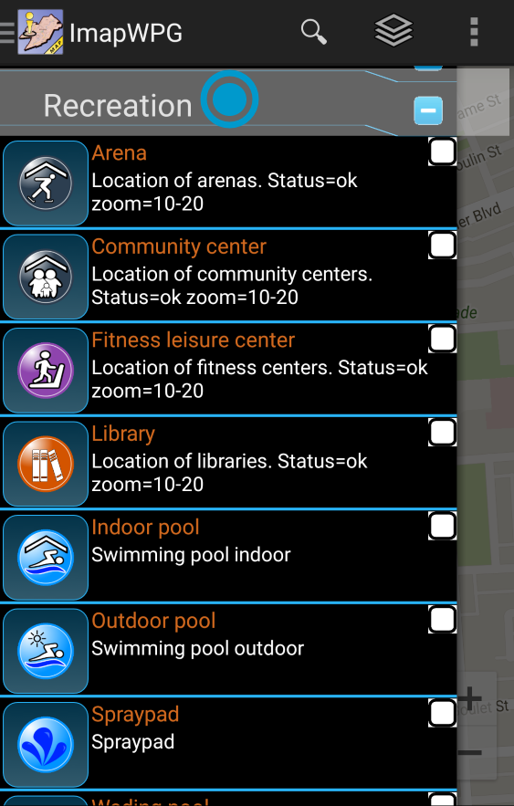
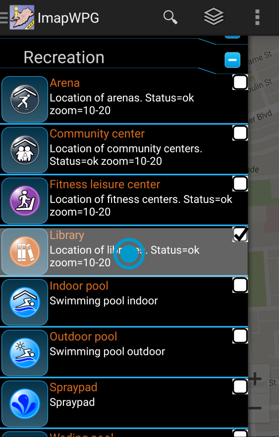

Selecting features:
1. Open feature drawer by taping the application icon at the top left corner or, the layer button or, swipe from the left edge of the screen towards center.
View How To open Feature Drawer
2. Tap a category to expand the features.

3. Tap feature of interest to select it.

4. Close feature drawer by taping the application title at the top left corner or, the layer button or, swipe from the center of the screen towards the left edge of the screen.
View How To close Feature Drawer